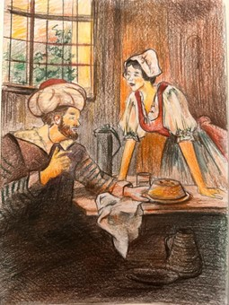

Ben Helvacı Güzeli… Babamın biricik kızıydım. Bir de erkek kardeşim vardı. Babam bir gün erkek kardeşimle birlikte hacca gitmeye karar verdi. Bana eski hayatımı devam ettirmemi, kim gelirse gelsin kapıyı açmamamı tembihledi. Babam ve kardeşim gittikten sonra normal hayatımı sürdürdüm. Bir gün caminin müezzini beni görmüş ve beğenmiş. Kapıma bir koca karıyı bohçacı kılığında gönderdi. Bohçacı kadın beni hamama davet etti, bir şekilde ikna olup onunla birlikte hamama gittim. Hamamda kimse yoktu, ben de peştamalıma sarınıp yıkanmaya başladım. Koca karı benden habersiz kaçıp gitmiş. Karşımda müezzini gördüm. Müezzinin elinden bir şekilde kurtulup evime döndüm. Hamamcının yardımıyla evine dönen müezzin babama bir mektup yazarak benim kötü bir şey yaptığımı bildirmiş. Babam da kardeşimi başımı kesmesi için göndermiş. Memlekete dönen kardeşim etraftan sorup soruşturmuş, ardından evimize geldi. Beni gezdirmek bahanesiyle bir dağa götürdü. Mektupta yazanları sordu, ben de olan biteni anlattım. Kardeşim buralardan çıkıp gitmemi söyleyince ben de yola koyuldum. Kardeşim de beni öldürmüş gibi yaparak elinde kanlı gömlekle babamın yanına gitmiş. Bir pınardan su içip bir ağaca tırmanıp geceyi orada geçirdim. Ağaçtan inmeye cesaret edemedim. O sırada o memleketin padişahı atıyla pınara geldi. At pınara yansıyan görüntümden dolayı ürküp su içmeyince şehzade beni buldu. Beni alıp sarayına getirdi. Kırk gün kırk gece süren bir düğünle evlendik. Yıllar geçti, üç çocuğumuz oldu. Bir gün babamı, kardeşimi ve ocağımızı özleyip ağladım. Kocam sorunca babamı, kardeşimi ve ocağımızı özlediğimi söyledim. Şehzade beni lalayla birlikte memleketime gitmem için yola saldı. Yolculuk sırasında vezir bana sahip olmak istedi. Kabul etmeyince üç çocuğumu da öldürdü. Beni öldürmek istediğinde de namaz kılma bahanesiyle kaçıp kurtuldum. Saraya dönen vezir şehzadeye çocuklarımı da bırakıp kaçıp gittiğimi söylemiş. Bense dağları aşıp bir şehre indim, değerli takılarımı satıp kendime bir erkek kıyafeti aldım. Varıp ihtiyar bir helvacının yanında işe girdim. Yaptığım helvalar herkesçe beğenildi, bir alan bir daha aldı. Şehzade beni bulmak için yanına veziri de alıp yola koyulmuş. Uzun uzun aradıktan sonra benim çalıştığım kasabaya gelmişler. Yemek yemek istediklerinde bir çocuk onları bizim helvacı dükkânımıza yönlendirmiş. Dükkâna geldiklerinde onları tanıdım. Onlar dükkânda helva yerken eski mahallemdeki komşular gelip beni bir helva sohbetine davet ettiler. Misafirlerle birlikte helva sohbetine gittik. Helva sohbetinde babamın, müezzinin, şehzade ve vezirin bulunduğu üst kata da helva ikram ettim. Orada herkes bir hikâye anlattı, benden de anlatmamı istediler. Ben de başımdan geçen her şeyi hikâye ederek kimliğimi açıkladım. Oradakiler olan bitenleri öğrenince müezzin ile veziri dövdüler. Kocakarıyı sürgüne gönderdiler, müezzinle veziri astılar. Şehzadeyle birlikte saraya döndük. Kırk gün kırk gece düğün yaptık. Böylece bütün olup bitenlere rağmen şehzadeyle mutlu bir hayat sürmeye devam ettim. (Masal metni için bk. Alangu, 2011: 31-53.)
